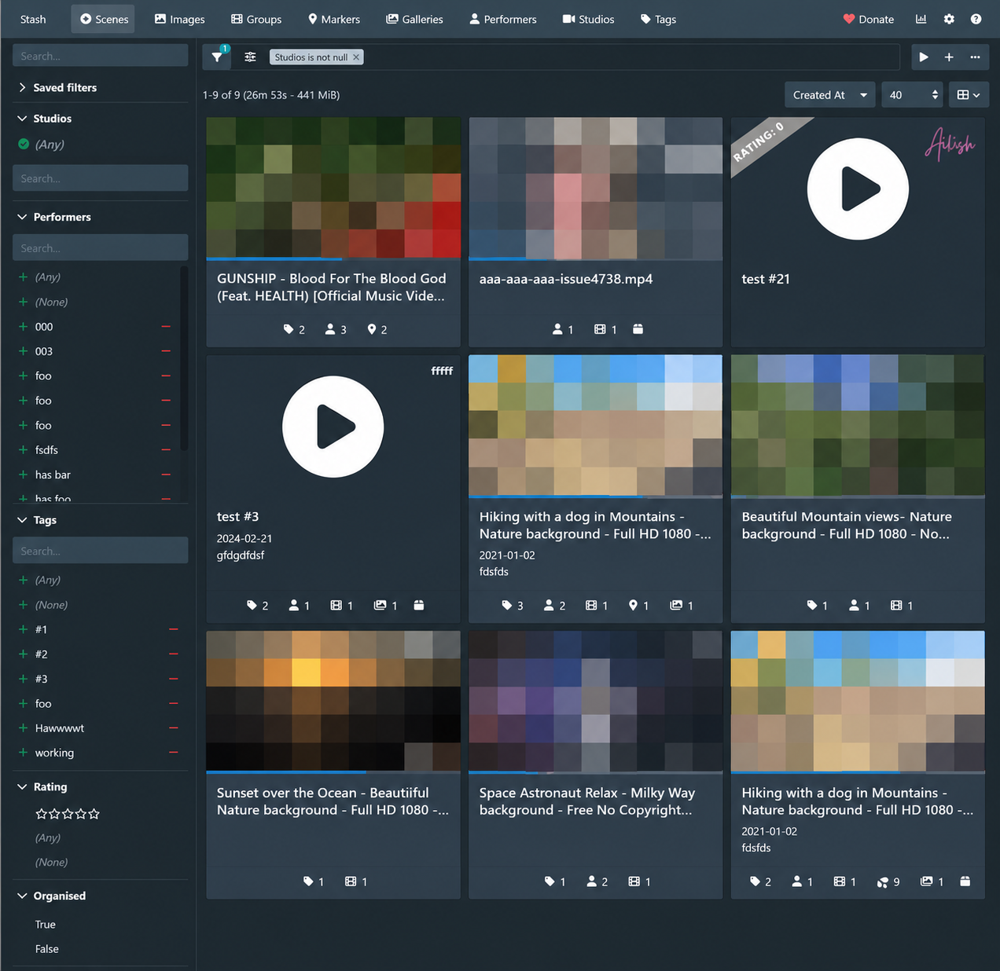
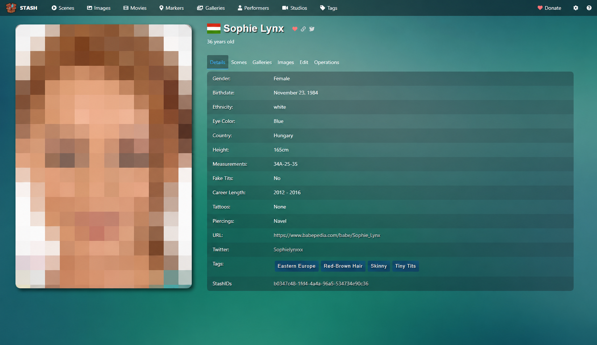
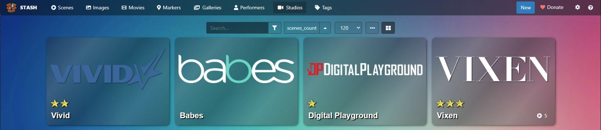
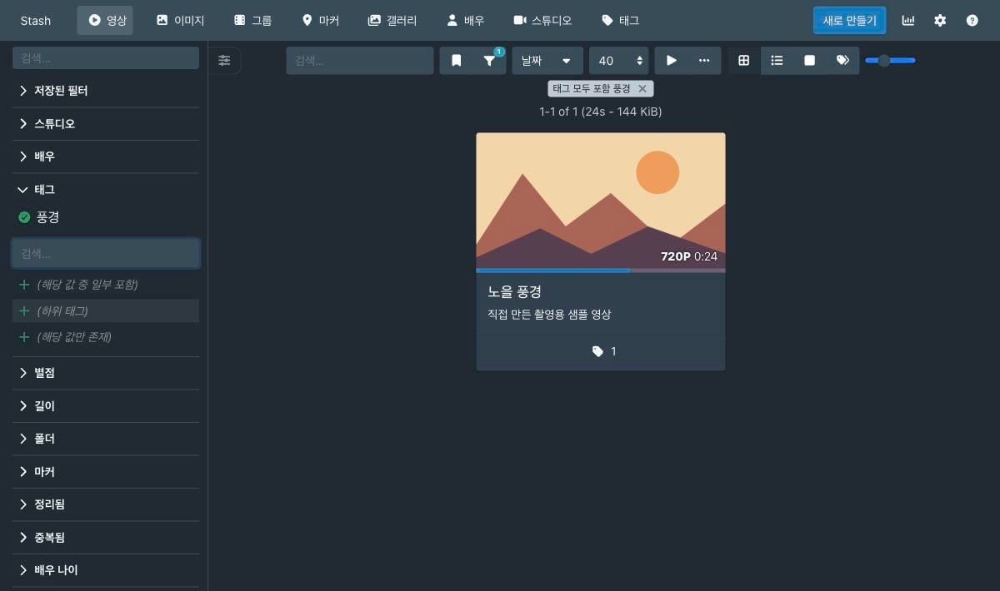
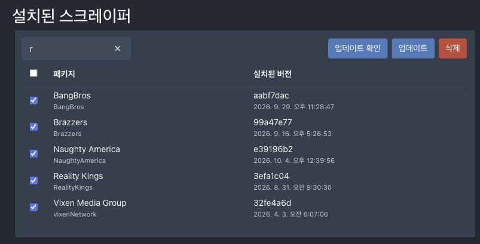
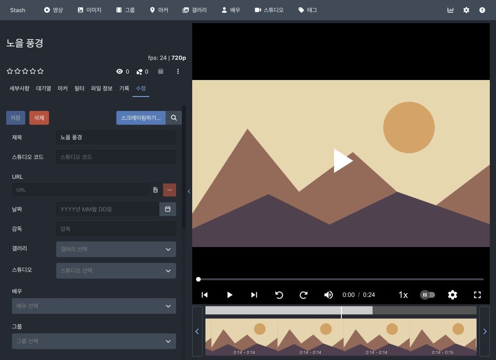
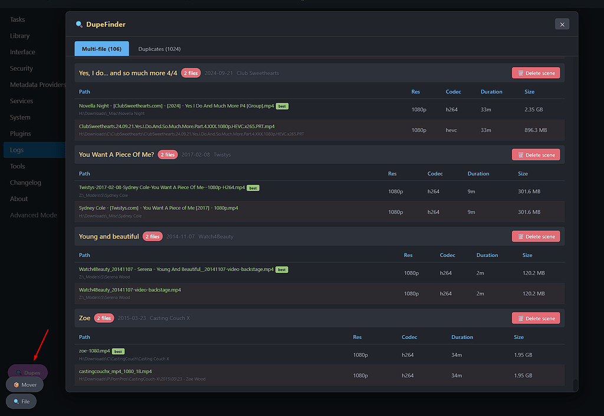
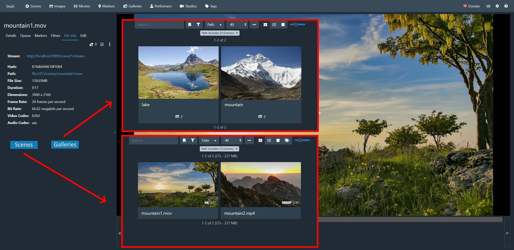
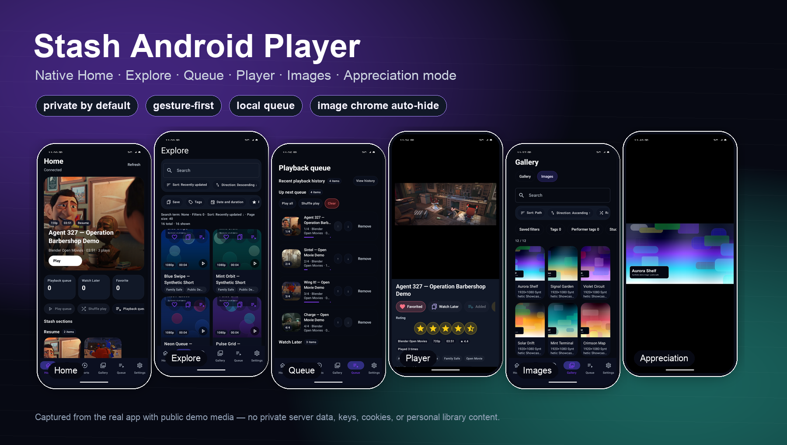

앱팔이 개붕이다.
저번 글에서 반응 좋으면 모아둔 영상으로 나만의 딸플릭스 만드는 방법 알려준다고 했는데 그거 가져옴.
난 n년 전에 거사 치르고 현타가 씨게와서 이런 숭한걸 모아두냐 하고 전부 삭제했던적이 있음 물론 그 뒤에 엄청엄청 후회함
그래서 그 이후 맘에드는건 무조건 다운받아서 그녀들의 아파트에 모아두는편임 근데 막상 모아두고 나니까 정리가 안되서 묻히는게 많아서 쓰게 시작한 프로그램인데 너무 만족스러워서 추천해봄
오늘 소개할 건 Stash라는 프로그램임.
양붕이들이 만든 노아의 방주 관리 프로그램인데 무료 오픈소스임. 내가 만든 거 아님.
Plex나 Jellyfin처럼 내 컴퓨터에 있는 영상을 정리하고 다른 기기에서도 볼 수 있게 해주는 프로그램이라고 생각하면 됨. 그중에서도 특정 장르의 영상 정리에 상당히 진심인 물건임.

하드에 있는 영상들을 등록하면 이런 식으로 썸네일 띄워놓고 골라 볼 수 있음.
영상 자체는 본인이 가지고 있어야 함. 가지고 있는 자료로 나만의 사이트를 만드는 거임.
일단 이런 개붕이들한테 추천함
영상 좀 모으다 보면 처음에는 나름대로 규칙을 세워서 정리하게 됨.
배우별로 폴더 만들고, 제작사별로 나누고, 마음에 드는 건 따로 빼놓고.
그러다 한 영상에 배우가 여러 명 나오면 어디 넣을지 애매해짐. 제작사 폴더에도 넣고 싶고 배우 폴더에도 넣고 싶음.
결국 기타, 정리예정, 새 폴더 (3) 같은 데 쌓이기 시작함.
분명 받아놓은 영상인데 어디 있는지 몰라서 또 받기도 하고, 제목만 봐서는 뭔지 몰라서 하나씩 열어보기도 하고.
이쯤 왔으면 한번 써볼 만함.
배우 이름 누르면 내가 가진 출연작이 쭉 나옴
Stash가 이 용도로 편한 이유가 배우랑 작품 정보를 중심으로 소장 영상을 엮어준다는 거임.

예를 들어 영상 보다가 마음에 드는 배우가 나왔다?
그 배우 이름을 누르면 내 라이브러리에 있는 출연 영상들을 모아서 볼 수 있음.
파일이 서로 다른 폴더에 들어 있어도 상관없음. 한 영상에 여러 명이 나오면 각각의 배우 목록에서 그 영상을 찾을 수 있음.
같은 파일을 배우별 폴더에 복사해놓을 필요가 없어지는 거임.

제작사로 모아볼 수도 있고, 좋아하는 영상에 별점 줘놓고 그것들만 골라볼 수도 있음.

폴더를 어떻게 나눌지 고민하는 시간이 꽤 줄어듦.
근데 배우랑 작품 정보를 언제 다 적냐
이걸 전부 손으로 적으라고 했으면 소개 안 했음.
지원되는 작품은 인터넷에서 제목, 표지, 배우, 제작사 같은 정보를 불러올 수 있음.
스크레이퍼라고 부르는데 그냥 작품 정보 가져오는 기능이라고 보면 됨.

목록 보면 어느 쪽 정리에 진심인지 대충 감 올 거임ㅋㅋ
제작사나 사이트별 스크레이퍼를 쓰거나, StashDB 같은 데이터베이스에서 작품 정보를 가져오는 식임.
정보가 잘 연결되면 영상 하나에서 배우 페이지로 넘어가고, 거기서 다른 소장 영상으로 넘어가는 게 가능해짐.
다만 아무 영상이나 던져넣으면 무조건 알아맞히는 건 아님. 지원되는 정보가 있어야 하고, 잘못 잡힌 건 확인해서 고쳐줘야 함.
내가 따로 편집한 영상이나 출처를 알 수 없는 파일까지 알아서 정리해주는 마법의 프로그램은 아니라는 얘기임.
그래도 파일 하나마다 배우 이름 적고 표지 찾는 것보다는 훨씬 편함.
“그 영상에서 그 장면”을 저장할 수 있음
영상은 기억나는데 좋았던 부분이 몇 분쯤이었는지 기억 안 날 때 있잖음.
다시 찾겠다고 재생바 여기저기 누르다가 엉뚱한 부분만 계속 나오고.
Stash는 영상 아래에 구간별 미리보기를 띄워줘서 장면 보고 이동할 수 있음.

여기에 마커라는 기능이 있음.
마음에 드는 지점에 책갈피를 꽂아두는 건데, 다음에 볼 때 그 부분으로 바로 갈 수 있음. 이름을 붙여놓거나 마커들만 모아서 찾아보는 것도 가능함.
굳이 영상을 잘라서 별도 파일로 만들지 않아도 기억해두고 싶은 구간을 남겨둘 수 있는 거임.
이런 부분에서 만든 사람들도 비슷한 불편을 겪었겠구나 싶음.
같은 영상 여러 번 받은 것도 잡아줌
이거 예전에 본 것 같은데 싶어서 확인해보면 이미 하드에 있는 경우도 있음.
파일명은 다르고 화질도 다르고, 하나는 앞에 제작사 인트로까지 붙어 있으니까 파일 크기로도 구분이 안 됨.
Stash에는 영상 내용을 비교해서 비슷한 영상들을 중복 후보로 찾아주는 기능이 있음.
별도로 DupeFinder 같은 플러그인을 쓰면 제목·날짜·제작사 정보가 겹치는 영상이나, 한 작품에 파일이 여러 개 연결된 것도 모아서 볼 수 있음.

후보끼리 비교해서 어떤 파일을 남길지 정리하는 거임. 기본 중복 검사의 정확도에 따라 다른 영상을 후보로 잡을 수도 있으니 확인하고 정리하면 됨.
하드 용량 부족하다고 새 하드 사기 전에 한번 돌려볼 만함.
사진이랑 화보집도 같이 정리됨
영상만 되는 건 아님.
이미지 폴더나 ZIP으로 된 화보집을 갤러리로 묶어서 볼 수 있고, 여기도 배우나 제작사 정보를 붙일 수 있음.

같은 배우의 영상이랑 사진을 연결해서 찾아보는 식으로 쓸 수 있다는 거임.
모아놓은 게 영상 반, 사진 반인 개붕이도 써먹을 수 있음.
어디서 돌아가냐
NAS 있어야 되는 거냐고 생각할 수 있는데 일반 컴퓨터에서도 됨.
- 윈도우 PC: 평소 쓰는 컴퓨터에 있는 영상 정리하는 용도로 사용 가능함.
- 맥·리눅스: 이것들도 지원함. FreeBSD도 지원 목록에 있음.
- NAS·개인 서버: Docker로 돌릴 수 있고 시놀로지, TrueNAS, Unraid 쪽 안내도 있음.
- 보는 기기: PC, 안드로이드폰, 아이폰, 태블릿에서 웹브라우저로 접속해서 보면 됨.
참고로 내 환경은 아래와 같음
NAS(저장소) <=> 맥미니(서버PC 실제로 Stash는 여기서 구동됨) <=> 폰(감상용 내가 만든 안드로이드 클라이언트 적용해서 씀)
예를 들어 컴퓨터에 영상을 모아놓고 집에서 폰으로 접속해서 보는 식으로 쓸 수 있음.
폰에 파일 하나씩 옮기거나 폰 용량 비울 필요 없이 컴퓨터에 있는 영상을 골라서 재생하는 거임.
대신 영상을 보내주는 컴퓨터나 서버는 켜져 있어야 함. 컴퓨터 꺼놓으면 당연히 폰에서도 못 봄.
NAS나 남는 컴퓨터를 계속 켜두는 개붕이면 이런 용도로 굴리기 좋음.
그래서 써볼 만하냐
파일 몇 개 받아서 보고 지우는 편이면 굳이 여기까지 할 필요는 없을 것 같음.
근데 예전에 받았던 거 다시 찾아보기도 하고, 좋아하는 배우 영상 모으기도 하고, 지우기는 아까워서 계속 쌓아두는 편이면 추천함.
폴더랑 파일명만 보고 찾던 영상들을 표지 보고 고르고, 배우 눌러서 찾아보고, 좋아하는 부분에 책갈피도 꽂아둘 수 있으니까.
방주는 지어놨는데 선반 정리가 안 된 개붕이들한테 꽤 괜찮은 물건임.
덧붙여서 난 폰 웹 조작이 불편해서 안드로이드용 플레이어도 따로 만들었음. 이것도 무료고, 이미 Stash 쓰는 개붕이면 같이 써봐도 됨.
IOS 쓰는 개붕이들은 Stashy - iOS/tvOS Player App for Stash - Plugins / Other Projects - Stash Forum 이거 쓰면 됨

아직 딸플릭스를 채울 영상이 없는 개붕이들을 위해 내가 만든 이지 비디오 다운로더도 조심스럽게 홍보 해봄
동영상 다운로드 어플인데 접속한 웹사이트에서 재생중인 동영상을 감지해서 다운로드 가능함 섹트도 쌉가능
한국 환경에 최적화 되어서 검열 우회 기능도 들어있고 딸붕이 아니 개붕이들이 자주 접속하는 사이트들 대부분 지원함
많으면 하루 3번씩 업데이트 할 정도로 막히는 사이트 지원도 활발하게 되고있으니 많관부
이 글은 AI로 쓰고 대충 검수했다!
ㅇㅇ 가능해 ! 여러 경로에서 불러올수있음